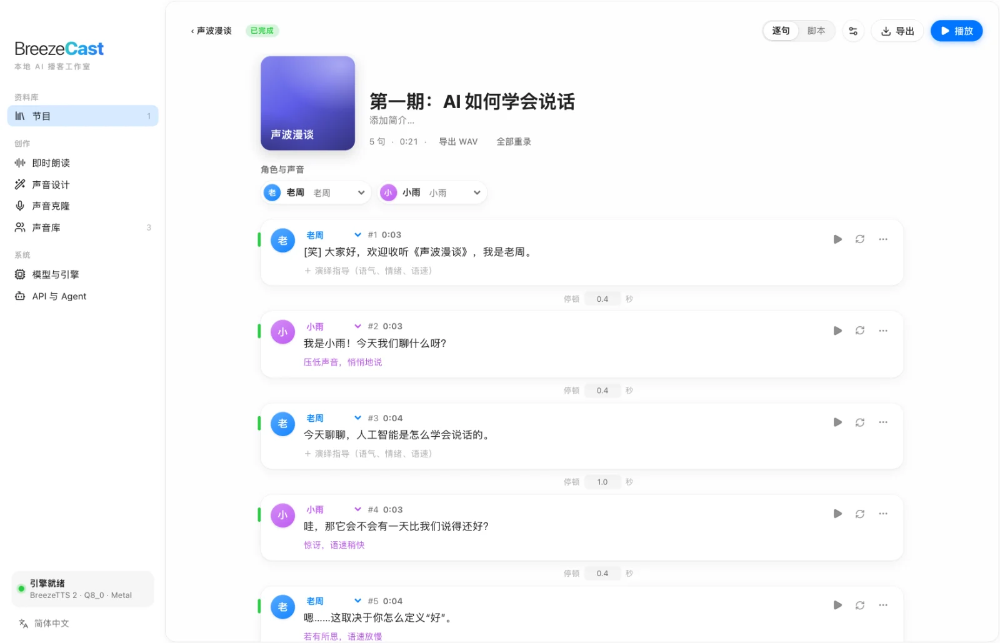
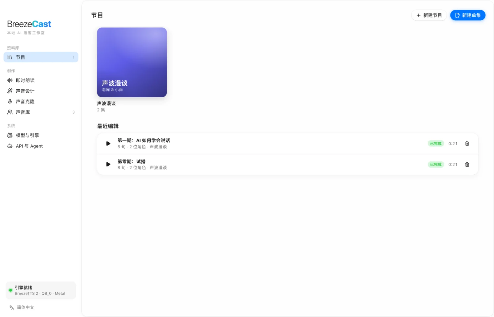
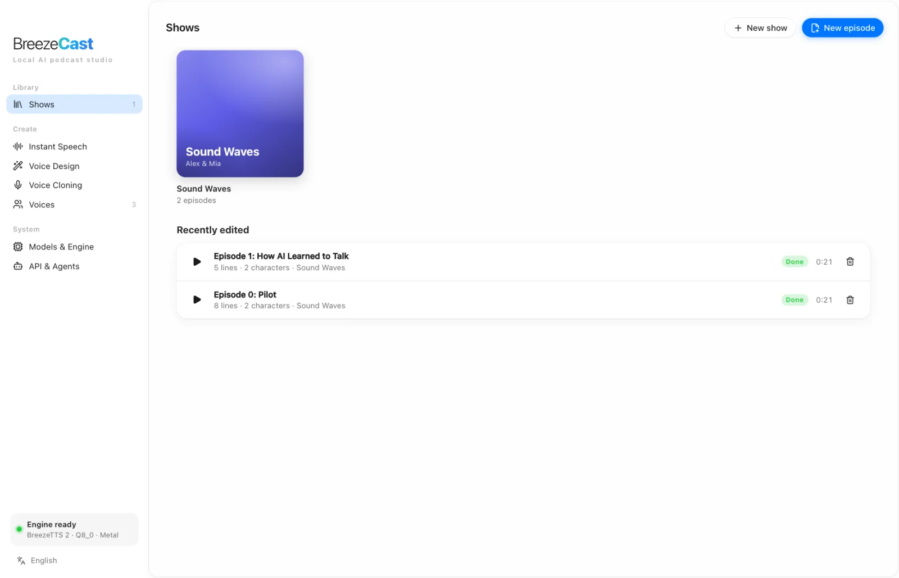

多角色脚本
用 主持人: …、嘉宾 {好奇}: … 编写对话并加入停顿。逐句编辑、换一条或锁定随机种子，只重新生成改动过的句子。
用脚本编排多人对话，借助 BreezeTTS 2 生成完整的播客单集。一句话设计声音，或克隆真实嗓音，逐句控制演绎，再导出带字幕和章节的音频。无需云端、无需 API Key、不上传任何内容。
免费 · 代码采用 Apache-2.0 · 模型权重仅限研究与非商业用途

BreezeCast 面向整期节目，而不只是单条音频：管理节目、编排对话，修改某一句后只重新生成这一句。
用 主持人: …、嘉宾 {好奇}: … 编写对话并加入停顿。逐句编辑、换一条或锁定随机种子，只重新生成改动过的句子。
用一句话描述声音，例如“温暖亲切的年轻女性，播客主持风格”。一次生成多个候选，把最满意的保存为固定音色。
跟读录制 3 到 20 秒，或导入 WAV、MP3、M4A、AIFF、FLAC。保存前先试听克隆效果。克隆需要说话人本人授权。
为每一句加上演绎指导，如“压低声音，悄悄地说”“若有所思，语速放慢”，并在文本里插入 [笑]、[叹气]、[咳嗽] 等声音事件。
模型通过 audio.cpp 在本机用 Metal、Vulkan 或 CPU 推理。文本、参考音频和成品单集都不会离开你的电脑。
自动响度统一和混音，导出 M4A 或 WAV，并附带 SRT 字幕、章节 JSON 和文稿。
用描述设计声音，或用一小段录音克隆。声音的名字和脚本里的角色名相同时，会自动配音。
粘贴或输入对话。演绎指导写在花括号里，停顿写在尖括号里。
主持人: [笑] 欢迎收听《声波漫谈》！
嘉宾 {好奇}: 你好，很高兴来到这里。
<pause 1s>
嘉宾 {若有所思，语速放慢}: 嗯，可以从两方面看。
BreezeTTS 2 逐句生成并混音。不满意的句子可以单独重录，最后导出带字幕和章节的音频。
所有节目、各季内容和独立单集都在一个资料库里。随时接着上次的进度，看清哪些单集有未生成的改动，只重新生成你改过的部分。

可随时在侧边栏切换应用语言。BreezeTTS 2 支持中文和英文，中英文混合的文本同样可以。

界面里的每项功能都通过随应用启动的本地 REST API 开放。安装配套 Skill 后，Claude Code、Codex 等 Agent 可以替你编写脚本、分配声音、生成并导出播客。
# 用脚本创建单集、生成并导出 M4A BC="python3 skills/breezecast/scripts/breezecast.py" $BC status $BC episode-create --title "第 1 期" \ --script-file ep.txt --cast '主持人=老周' $BC render e_xxx --wait $BC export e_xxx --format m4a # 或者直接调用 API curl -s http://127.0.0.1:17860/api/v1/speech \ -H "Content-Type: application/json" \ -d '{"text":"[笑] 你好，我是 BreezeCast。", "instruct":"一位热情的年轻女主播"}'
不用订录音棚，也能写试播稿、测试形式和声音，甚至做完整的一档节目。
把文章和笔记变成音频，并让角色声音保持统一、可反复使用。
通过本地 REST API，把语音能力加到你自己的工具和自动化流程里。
用现成的 Skill 给 Agent 配上声音，不必再自己对接 TTS 服务。
| macOS | Windows | |
|---|---|---|
| 系统 | macOS 14 Sonoma 或更高 | Windows 10 1903 或更高 / Windows 11（x64） |
| 推理 | Apple Silicon（M1 及以后），Metal | 有 Vulkan 驱动的显卡（NVIDIA / AMD / Intel），否则用 CPU，速度明显更慢 |
| 内存 | 建议 16 GB 及以上 | 同左；用 Vulkan 时显存建议 6 GB 及以上 |
| 磁盘 | 每个模型 3.8 到 7.3 GB（Q4_0、Q4_K、Q8_0 或 BF16） | 同左 |
不需要。模型下载一次之后，语音合成完全在你的电脑上运行。脚本、声音和音频不会上传到任何服务器，也不需要账号或 API Key。
BreezeTTS 2 支持中文和英文，也支持中英文混合文本。应用界面提供简体中文和 English。
可以。录制 3 到 20 秒清晰人声，或导入音频文件，再提供准确的逐字稿，试听满意后保存为可复用的声音。克隆他人声音必须取得本人授权。
macOS：Apple Silicon（M1 及以后）和 macOS 14 或更高，建议 16 GB 内存。Windows 10/11：建议使用有 Vulkan 驱动的显卡，否则退回 CPU，速度明显更慢。
BreezeCast 的源代码采用 Apache-2.0 许可。BreezeTTS 2 模型权重及用它生成的音频受 BreezeBlue Research and Non-Commercial License 约束，仅限研究和非商业用途。
可以。界面里的每项功能都通过本地 REST API 开放，配套 Skill 让 Claude Code、Codex 等 Agent 能直接写稿、选声音、生成并导出播客。